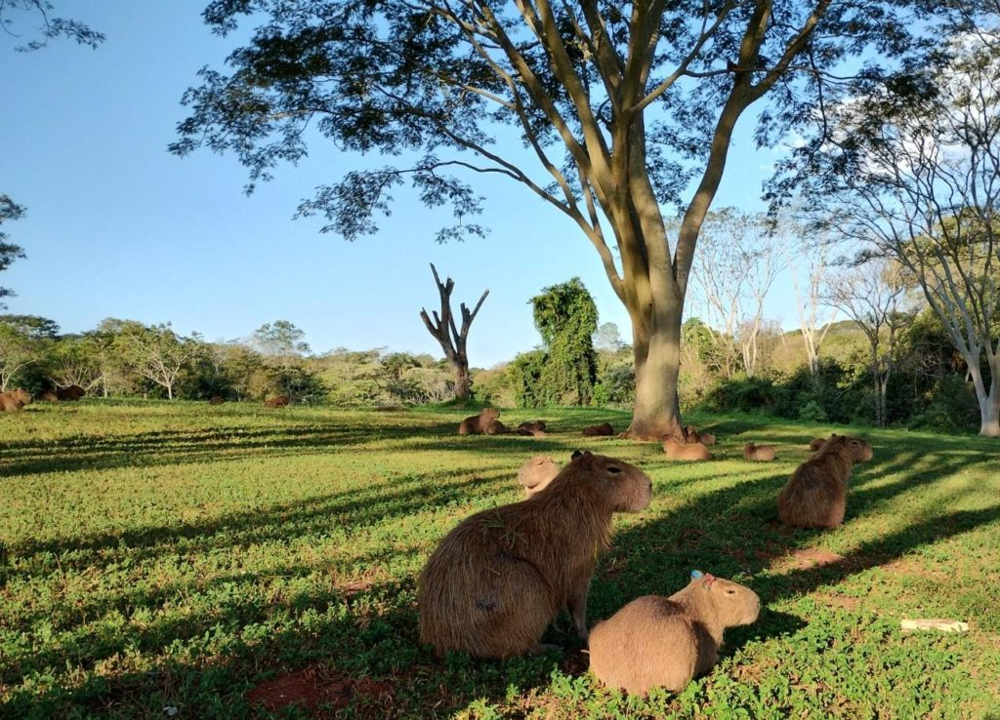

O Parque das Capivaras é um dos espaços mais tranquilos e agradáveis de Três Lagoas, ideal para quem busca contato direto com a natureza. Como o próprio nome sugere, o parque é conhecido pela presença de capivaras, que podem ser vistas circulando livremente pelo local, proporcionando uma experiência única aos visitantes. O ambiente é marcado por áreas verdes, vegetação nativa e espaços abertos que convidam ao descanso e à contemplação. É comum encontrar pessoas caminhando, praticando exercícios leves ou simplesmente aproveitando o silêncio e a paisagem natural. O parque também é bastante procurado por quem gosta de observar animais e tirar fotos. Por ser um local mais calmo, o Parque das Capivaras se diferencia de outros pontos turísticos mais movimentados da cidade, oferecendo um clima de tranquilidade e bem-estar. A presença dos animais reforça a importância da preservação ambiental e torna o passeio ainda mais interessante, especialmente para crianças e famílias.
